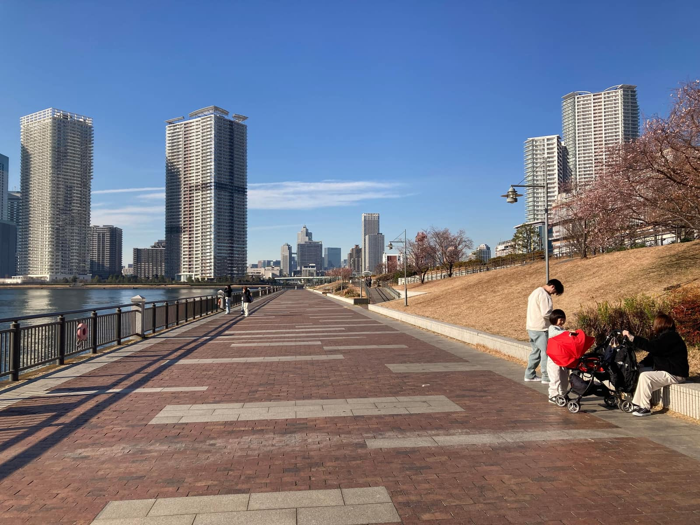

東京を拠点に活動する台湾出身の不動産エージェントです。中国語（繁体字）・台湾語はもちろん、日本語でのご相談も完全に対応いたします。物件購入・自宅探し・投資・ご契約までトータルにサポートしています。物件探しやローン、ご契約のことなど、どんなことでもお気軽にご相談ください！
→ 周周にできることを見る
📍 東京23区を中心に、横浜・神奈川・千葉エリアにも対応しております！
住宅ローンの月々返済額、諸費用、利回り、為替レートまでまとめて計算
日本語の物件資料が読めない方に。JPG画像をアップロードするだけで中国語に翻訳・要点整理

ご成約の一つひとつが、日本での新しい生活の始まりです。以下は実際にいただいたお客様のお声です。
「周周のおかげで日本で初めてのマイホームを購入できました。最初から最後まで中国語で対応いただき、とても丁寧で助かりました。今後また不動産の売買があれば必ずお願いしたいです。」
— 台湾 T様（初めての購入）
「私たちはアメリカ在住で、オンライン内見からご契約まで全て周周にリモートでサポートしていただきました。とても安心でき、引き渡し後の細かい手続きまでしっかり対応していただきました。」
— アメリカ K様ご夫妻（リモート内見）
「購入後も、周周に電気・ガス・水道の手続きや管理会社とのやり取り、鍵の交換まで対応していただきました。アフターサービスが本当に素晴らしく、心から感謝しています。」
— 日本在住 T様（自宅購入・アフターサポート）
「初めて日本で一戸建てを購入しました。土地探しから内見、ご契約まで、周周が丁寧に説明してくださったおかげで、台湾にいながら安心して決断できました。」
— 台湾 J様ご夫妻（初めての一戸建て購入）
「千葉で土地を購入する際は確認事項が多かったのですが、周周が用途地域や権利関係、現況までしっかり確認してくれました。プロセスが透明で丁寧、とても専門的でした。」
— 台湾 H様（千葉の土地購入）
「還暦を迎えてから、思い立って日本への移住を実現しました。異国の地で新しいことを学び、自分自身を大切にしながら、心身ともに自由を取り戻すことができました。周周には最初から最後までサポートしていただき、すべて順調に進みました。」
— 日本へ移住されたC様（退職後の移住）
周周に内見やご購入をご依頼いただいた方へ。ご感想もぜひお聞かせください ♡
ご自宅用でも投資用でも、まずはLINEで周周にお気軽にご相談ください。気になる物件があれば、そのまま送っていただいても構いません。
物件探し、内見、価格交渉から、ローン、契約、引き渡し、アフターサポートまで、日本の不動産購入に関わることを周周が中国語・台湾語・日本語で全てサポートします。
不動産purchaseとは直接関係のないご相談は、以下の内容で有料相談を承っております：
※ 不動産のご購入に伴う翻訳・手続きサポートは、仲介サービスの一環として提供いたします。※ 翻訳のみ、就職相談、生活相談などは別途有料サービスとなります。
こうした手続きは、周周が一つひとつ一緒に確認しながら進めますので、日本語の資料を自分で読んで頭を抱える必要はありません。
日本で暮らしていて、賃貸から購入へのステップアップを考えている方へ。
日本で安定した家賃収入を得たい投資家の方へ。
よくいただくご質問にお答えします。
周欣妤（シュウ・シンユウ）｜台湾出身・東京の不動産エージェント｜中国語・台湾語・日本語対応
LINE ID：
QRコードを読み取って、または長押しで LINE を追加
 ▶
▶